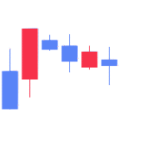

https://n.news.naver.com/mnews/article/277/0005848203?sid=101
한국의 볼커인것입니까
https://n.news.naver.com/mnews/article/277/0005848203?sid=101
한국의 볼커인것입니까
금융주 가자아아아ㅏ아ㅏ앙
경기 ㅈ박았는데 긴축해야 되는 상황이라니 진짜 최악이네..ㅋㅋ

한국은행 : 반도체에서 낙수효과가 나올거야!!
진짜 줫댓네 돈이 안도는데 긴축까지!
긴축 안하면 거품을 더 키우는건데 저게 당연한거지
나라에 돈은 줫나 많은데 내수는 줫나 망했고 내수엔 돈이 안돌고 시장엔 돈이돌고 물가는 올라가고
나라에 돈이 아직 없어용 삼닉 성과급은 내년이라
아직 세금 못거뒀나요? 나라에 돈이 없는데 왜 물가가 오르죠
나라에 돈이 없어도 물가는 오를수있음
베네수엘라 짐바브웨 이런곳이 나라에 돈 많아보임?
1달러1000원~
삼하는 ㅈㄴ 노낫다고봄. 현금부자인데 기준금리인상기까지 겹쳐서 돈이 걍 무한으로 복사될듯
내수는 좆박고 있는데 반도체때문에 성장률은 좋으니 대가리 존나 아플듯
5년뒤엔 양극화가 얼마나 심해질까

어렵다어렵다하는데 공항가면 매번미어터지더라 ㅋㅋ
내가 요즘 국내여행 자주 다녔는데 동남아 여행 패키지 괜찮게 뜬거랑 돈 비슷하게 씀
나도 내년엔 동남아나 갈라고
일단 사람들이여행이란걸할여유는있다고보는거임 나는ㅋ 그리고 어딜가려는진모르겠으나 패키지는 비추할게
병신인가 여행을 가는사람만 거기를 가니깐 당연히 사람이 많지 대한민국 인구에서 상위 5퍼만 거기 간다고 해도 백만단위다 빙시야 거기에 여행을 매일가냐 돈 못버는 사람도 알뜰살뜰 모아서 한번 가는게 여행이다 당연히 매번 미어터지지
이거쥐 ㅋㅋ
걍 숫자보고 해야지 서민경제니 부동산이니 지킨다면서 깝치는거 ㅈ같음
숫자 통계보고 해야 건전해지지
공무원 더 뜨겠다;
이래서 통화주의자들이란....
자 은행보험주 드가자
이때까지 안올린 대가 치러야지
오늘 30조원이 한번억 풀려서그런가
삼전 배당 절반이 외국인 몫이라 그닥일듯. 물론 15조도 꽤 되긴하네
이전 총재처럼 아가리볼커는 누구나 함 ㅋㅋ
해봐야
베이비스텝 찔끔올리고 온갖 가오는 다 잡을듯 ㅋㅋ
장례업체 주식 투자하면 되나